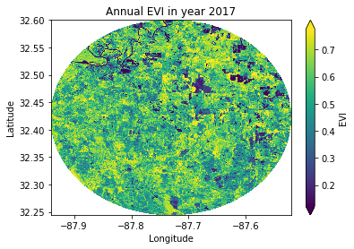
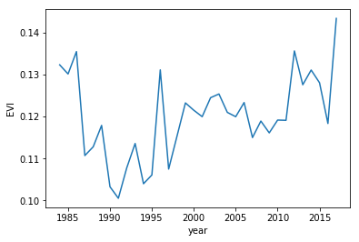
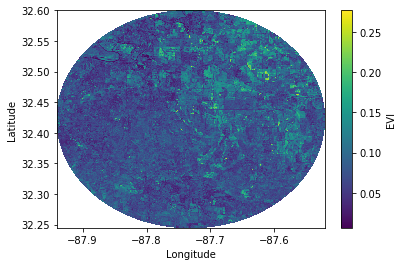
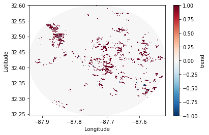

I perform most of my analyses using either R or standalone GDAL tools simply because of their general convenience and ease of use. Standard spatial analysis functions and tools are in my opinion still more readily available in R and most R packages are quite mature and well designed ( but see the readme ). Nevertheless python has caught up and a number of really helpful python modules for spatial analyses have been released to this date. I have always loved coding in python since I developed my LecoS plugin, especially because of it’s processing speed (doing any computation on numpy arrays is quite fun) and clean synthax. In this post I will demonstrate how to make use of the new (?) xarray (previously xray) python module to load remotely-sensed data and run “pixel-wise” correlation tests on them.
I cannot release the shown spatial data, however any ‘stack’ of remotely-sensed data or multiple satellite images will do as long as you can assign a time dimension/axis to the array.
All python modules should be easible downloadable via the package manager of your choice such as wheel, pip and conda & co.
So what is xarray? In short it is a python package that enables explicit computation on labeled, multi-dimensional arrays, such as those commonly obtained from geophysical models or repeated satellite images. Think of it as a convenience wrapper that combines the best of pandas data structures with numpy’s array functionalities. It has been developed specifically with geophysical applications in mind and therefore should be quite useful for anyone using such data.

Loading and plotting data
So how does it work? Let’s get started.
First load the default packages that we are going to use later.
# Necessary defaults
import numpy as np
import matplotlib.pyplot as plt
from scipy import stats
import pandas as pd
import os, sys
# Xarray
import xarray as xr
Next let us load some spatial data. In my example it is a stack of annual Landsat composite images created for the period 1984-2017. Each composite quantifies the Enhanced Vegetation Index (EVI) for a given year. My test data is roughly 100mB big, but all code presented can easily be scaled up to hundreds of GB.
In the newest xarray version we can use the fantastic rasterio python interface to load commonly-used spatial data such as GeoTiffs.
route = "test_2063.tif"
ds = xr.open_rasterio(route).rename({'x': 'Longitude', 'y': 'Latitude', 'band': 'year'})
Spatial-temporal satellite data comes with at least 3 dimensions. The spatial dimensions describing the rows and columns of the matrix as well as a third dimension usually associated with time (year, year-month, date, …). xarray furthermore loads any spatial attributes (such as spatial extents, cell resolution or geographic projections) it can find and assigns them to the DataArray.
Here is how my data looks: (note the attributes!)
<xarray.DataArray (year: 34, Latitude: 1318, Longitude: 1555)>
[69682660 values with dtype=float32]
Coordinates:
* year (year) int64 1 2 3 4 5 6 7 8 9 10 11 12 13 14 15 16 17 18 19 ...
* Latitude (Latitude) float64 32.6 32.6 32.6 32.6 32.6 32.6 32.6 32.6 ...
* Longitude (Longitude) float64 -87.94 -87.94 -87.94 -87.94 -87.94 -87.94 ...
Attributes:
transform: (-87.9403950755027, 0.0002694945852365922, 0.0, 32.599951492...
crs: +init=epsg:4326
res: (0.0002694945852365922, 0.00026949458523998555)
is_tiled: 0
nodatavals: (-3.4e+38, -3.4e+38, -3.4e+38, -3.4e+38, -3.4e+38, -3.4e+38,...
We are going to the data and try to create a spatial visualization. xarray has inbuilt plotting capabilities to visualize both temporal and spatial data using matplotlib. In my example I first alter the temporal dimension to have the correct time axis. I furthermore convert my xarray DataArray to a DataSet (more here on the difference ) and also filter the array to encorporate only positive values.
# Create a series with years
dates = pd.date_range('1984-01-01', periods=34,freq = "A").year
ds.coords["year"] = dates # Reset dates
ds = ds.to_dataset("EVI") # Convert to dataset
# Create a subset to run calcution on and correct scale + filter
img = ds.pipe(lambda x: x * 0.0001)
img = img.where(img >= 0)
# Select the last item of year and plot it
img.isel(year=33).EVI.plot(robust=True,cmap='viridis')
# Finally plot a test year
plt.title('Annual EVI in year %s' % ('2017') )
plt.ylabel('Latitude')
plt.xlabel('Longitude')

Basic and applied calculations
Next let us conduct some spatial-temporal analyses.
The xarray created above can in principle easily be summarized as a whole or on the pixel level. Both can be easily achieved by grouping observations on the pixel level.
ds2.EVI.groupby('year').std().plot()

Equally if we want to quantify the standard deviation across all 34 years in the stack
ds2.EVI.groupby('Longitude','Latitude').std('year').plot()

But what if want to apply a defined method over each pixel in given xarray? This is again possible, but a little bit more complicated. First we need to define a function that performs the requested analysis and returns a single value. In my example I want to calculate Kendall’s rank correlation test for each time series over all pixels. Remember how we imported the scipy stats package at the start of this post? To save time and harddrive space, we simply want to know for this simple example whether EVI is “significantly” ($p = 0.05$) increasing over the whole time series. So let us build a function:
def k_cor(x,y, pthres = 0.05, direction = True):
"""
Uses the scipy stats module to calculate a Kendall correlation test
:x vector: Input pixel vector to run tests on
:y vector: The date input vector
:pthres: Significance of the underlying test
:direction: output only direction as output (-1 & 1)
"""
# Check NA values
co = np.count_nonzero(~np.isnan(x))
if co < 4: # If fewer than 4 observations return -9999
return -9999
# Run the kendalltau test
tau, p_value = stats.kendalltau(x, y)
# Criterium to return results in case of Significance
if p_value < pthres:
# Check direction
if direction:
if tau < 0:
return -1
elif tau > 0:
return 1
else:
return tau
else:
return 0
# The function we are going to use for applying our kendal test per pixel
def kendall_correlation(x,y,dim='year'):
# x = Pixel value, y = a vector containing the date, dim == dimension
return xr.apply_ufunc(
k_cor, x , y,
input_core_dims=[[dim], [dim]],
vectorize=True, # !Important!
output_dtypes=[int]
)
Next we execute our new function and to do so we first need to create a new DataArray that contains the y variable (date in our example). Afterwards we can apply our function on the loaded xarray.
x = xr.DataArray(np.arange(len(ds2['year']))+1, dims='year',
coords={'year': ds2['year']})
r = kendall_correlation(ds2, x,'year')
This whole computation took us roughly 1min and 54 seconds on my Lenovo laptop.

Further speed ups
In many cases an execution on a local computer hardly makes sense and is time inefficient. Particularly if your data is too large to fit into memory. This is usually the case with earth-observation data, which can easily become larger than 10GB++ .
Luckily xarray supports parallel execution via the optional Dask integration. So what is dask? Compared to standard numpy array calculations it supports lazy evaluation of any supplied code. This means that your code is only executed on the dataset as soon as you tell dask+xarray to do so (via the compute() function ). Dask divides your array into many small pieces, so called chunks, each of which is presumed to be small enough to fit into memory. Chunking your data enables better parallelization which can easily be scaled up over multiple CPU cores or entire clusters of machines.

So how do we enable dask for your computation ? This is actually quite simple.
# Import dask stuff
import dask.array as da
from dask.diagnostics import ProgressBar
# Then while loading in your data specify that you want your data to be loaded as chunks
# A more optimal chunk size for your data can really speed up computation
# So ensure that your dataset is correctly chuncked.
ds = xr.open_rasterio(route,chunks={'band': 34, 'x': 1000, 'y': 1000}).rename({'x': 'Longitude', 'y': 'Latitude', 'band': 'year' })
You will notice that your DataArray has now become a dask-array
<xarray.DataArray (year: 34, Latitude: 1318, Longitude: 1555)>
dask.array<shape=(34, 1318, 1555), dtype=float32, chunksize=(34, 100, 100)>
...
Next you have to enable dask in your apply function and compute the result
def kendall_correlation(x,y,dim='year'):
return xr.apply_ufunc(
mk_cor, x , y,
input_core_dims=[[dim], [dim]],
vectorize=True,
dask='parallelized', # Note the addition !!!
output_dtypes=[int]
)
# Make a little ProgressBar
with ProgressBar():
# Until 'compute' is run, no computation is executed
r = kendall_correlation(ds2, x,'year').compute()
Running my computation with dask decreased the whole processing time down to 45s !
But there is more we can do to further speed up the computation. By enabling numba as just-in-time (JIT) byte compiler for our kendall correlation function we can squeeze a couple more seconds out. Numba compiles your python function into a byte-compiled snip that is a lot faster to execute. One can enable the JIT compiler as follows:
from numba import jit # Speedup for python functions
@jit(nogil=True) # Enable JIT compiler
def k_cor(x,y, pthres = 0.05, direction = True):
...
Note all this was run on a rather small dataset. The more data you have and the more computational intensive your analysis becomes, the more do the steps above improve your execution time.
My system info:
- Linux Ubuntu - Codename bionic
- Python 3.6.5
- Numpy 1.13.3
- Xarray 0.10.2
- dask 0.16.0
- numba 0.34.0
Full source code as gist